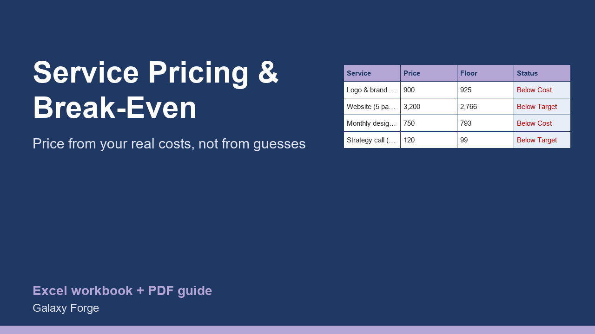

Price every service from your real costs and capacity: cost per billable hour, minimum price, target-margin price, and whether next month's plan covers your costs and your own pay.
Service businesses usually set prices by looking at competitors or by gut feel, then discover at the end of the year that they were busy and still short of money. The missing number is the cost of one billable hour: everything the business spends in a month, including what you pay yourself, divided by the hours you can actually bill.
This calculator works that number out from your fixed costs, your target owner pay and your real capacity (weeks worked, hours per week and the share of hours that are billable). Every service then gets a floor price that covers its share of costs and fees, a target price that adds your profit margin, and a status against what you charge today.
A monthly plan shows whether the jobs you expect will cover your fixed costs and your pay, and how much of your capacity they use.
1) Costs & Capacity: enter your monthly fixed costs, the monthly pay you want to take out, your working weeks per year, hours per week, and the share of those hours you can bill (rarely more than 60-70%: admin, sales and travel are not billable). Add your payment-processing and other price-linked fees and your target margin. 2) Services: one row per service with the hours it takes, any direct cost (materials, subcontractors), your current price and how many you expect to sell next month. 3) Read Status: BELOW COST services lose money; BELOW TARGET services do not reach your margin. 4) Summary: does next month's plan cover everything, and how full are you?
Price: $15, one-time. Download: service_pricing_break_even_calculator.xlsx (Costs & Capacity, Services, Summary) and this guide. Works in Excel 2016 or later, Excel for Mac and Excel on the web; opens in Google Sheets and LibreOffice.
New product, listed 2026-10-23: no sales or reviews yet. Example figures in the workbook are illustrative.
This workbook is a pricing aid, not accounting, tax or legal advice. It relies on your own cost and time estimates; review prices with your accountant where needed.